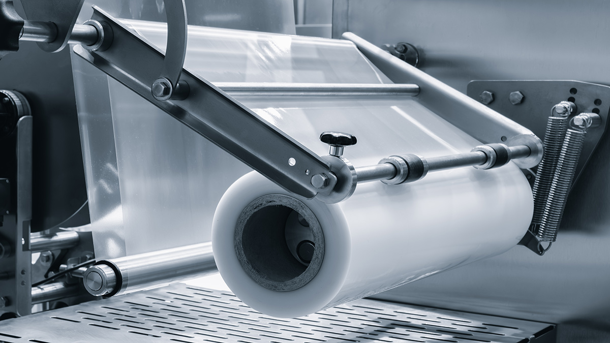
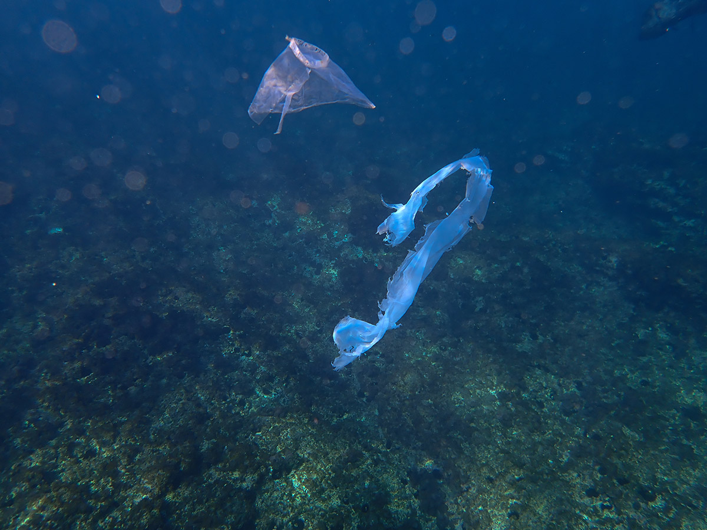
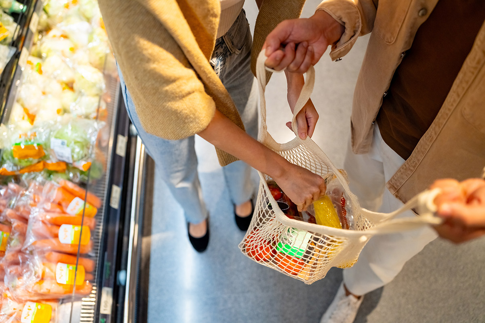
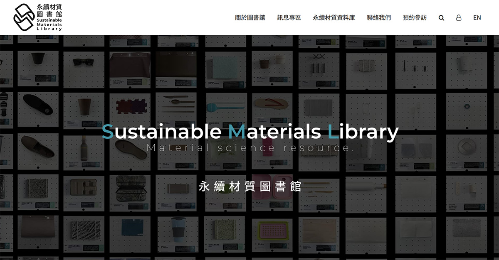

塑膠如何真正循環？從原料、設計到回收，破解環保迷思
◎ 撰文／黎育如
◎ 圖片來源／達志影像Shutterstock
◎ 發布日期／2026.08.20

◎ 撰文／黎育如
◎ 圖片來源／達志影像Shutterstock
◎ 發布日期／2026.08.20
今年上半年，台灣一度出現塑膠袋缺貨、價格上漲。平時不起眼的一只袋子，竟受到國際油價、戰爭與石化產能牽動，也讓人重新看見，塑膠的源頭，仍與石油緊密相連。
財團法人塑膠工業技術發展中心副總許祥瑞解釋，塑膠供應鏈大致分成三段。上游將原油或輕油裂解，產生乙烯等石化原料；中游再製成PE、PP、PVC等塑膠粒；下游則加工成塑膠袋、餐盒、水管、電線與電子產品外殼。只要油價或上游產能變動，成本便會一層層往下傳。
前幾年中國大量新增石化產能，碰上內需轉弱，低價原料大量出口，亞洲市場一度供過於求，台灣廠商也因此縮減產線。後來戰爭推升油價，停下來的產能又無法立即恢復，短期便容易出現供應吃緊。
在原油的運用分配上，雖然汽車逐漸電動化，也不代表石油自然退出生活；燃料需求反而轉變，更多原油可能被轉為塑膠、纖維與化學品，繼續留在包裝、衣服與日用品裡。

▲ 塑膠袋屬於日常用品，雖然減塑政策推動多年，但仍有很多使用習慣難改變。（圖片來源／達志影像Shutterstock提供）
然而，在日常中的塑膠卻常常與「破壞」連結在一起。但回到材料發展初期，塑膠原本也是為了解決天然資源不足。早期撞球使用象牙，眼鏡框與飾品也會取材自龜甲、獸角，人造材料的出現，讓生活用品不再完全依賴稀少而昂貴的自然資源。
隨著全球人口增加，人們又追求便宜便利與大量供應，塑膠逐漸成為現代生活的基礎材料。PE常用於購物袋與包裝膜，PP常見於餐盒與耐熱袋，PVC則廣泛出現在水管、電線與部分醫療用品。
問題正出在「便宜又好用」。能夠長時間存在的材料，卻常被設計成使用幾十秒便丟棄。塑膠真正的難題，未必只是材質本身，而是我們為何讓它的生命如此短暫。
許祥瑞認為，沒有必要使用的塑膠，就應減少使用。例如內用飲料杯蓋，可能只在端到座位的幾十秒發揮作用，坐下後立刻成為垃圾。這類功能短暫的一次性用品，源頭不用，通常比事後回收更有效。
確實有需求時，就應延長使用時間。他隨身保留一只2017年取得的便利商店塑膠袋，至今仍持續使用。塑膠袋的問題，不只在於它由塑膠製成，更在於多數人只用一次。

▲ 塑膠袋若處理不當，容易成為垃圾、最終流入海洋。（圖片來源／達志影像Shutterstock提供）
減量也藏在產品設計裡。咖啡包從寬版改成長條包、奶粉罐取消額外塑膠蓋，都能在功能大致不變下少用材料。
民眾也常疑惑，為何日本塑膠袋通常比台灣薄？許祥瑞指出，原因可能與販售方式有關。台灣許多塑膠袋以總重量計價，袋子做薄後，業者反而要生產更多個才能達到相同重量，缺乏減薄誘因；若改以數量與厚度標示，減薄便能直接節省原料與成本。這也說明，減塑不能只要求消費者少拿，商品規格與計價制度同樣重要。
材質替換並不等於完成減塑。判斷環境影響，還要看原料、製造、運輸、使用與廢棄的完整生命週期。
棉布袋、不織布袋製造時可能耗用更多能源與資源，必須重複使用足夠次數，才能攤平前端環境成本。買了環保袋卻只用幾次，未必比把現有塑膠袋持續使用更好。比起不斷購入新的替代品象徵更環保，把手邊已有的袋子用久一點，往往更實際。
另一個常見迷思，是加入咖啡渣、鳳梨纖維或農業剩餘物，就代表產品更環保。許祥瑞提醒，「減少石化原料」與「能夠再次回收」是兩件不同的事。
需要進入回收系統、反覆再製的塑膠，材質通常要越純、越乾淨越好。混入過多天然纖維、不同樹脂或複合成分，可能改變材料性質，增加分類與再製難度，最後反而只能焚化。

▲ 現在提供很多「環保袋」，但若要真正環保，必須要使用到一定的次數，若要進到循環，則需要更高的標準條件。（圖片來源／達志影像Shutterstock提供）
因此，材料設計要先回答產品最後會去哪裡。預計回收再製的產品，應盡量使用單一、容易辨識的材質；本來缺乏回收價值、最後多半進入焚化爐的用品，加入農業剩餘物，才可能發揮減少石化原料的效果。
真正的循環，不是再生材料加得越多越好，而是產品能否順利走完回收路徑。
把場景拉回最常見塑膠的日常，食品包裝正呈現循環設計的兩難。月餅、香腸等包裝，看似只有一層，實際上可能由多種材料組成，以阻隔氧氣與水氣、降低變質風險，卻也因難以分離而無法回收。只要求改成單一材質，可能影響保存與食安；完全不考慮回收，又把成本留給環境。
因此，許瑞祥認為，循環需要三個條件同時成立。首先技術上做得到，以及市場願意接受回收料可能較高的價格與不同外觀，最後則是法規再用費率、標誌、採購或生產者責任，縮短新料與再生料之間的成本落差。
2026年通過的《資源循環推動法》，也將綠色設計、再生料使用、循環標誌及創新實驗沙盒納入制度，讓部分原本被視為廢棄物的材料，有機會先在受控環境中測試再利用。
成立於1993年的塑膠中心，長期服務缺乏研發、檢測與打樣能力的中小企業，近年也投入回收材料、生質塑膠、複合材料及永續設計。中心的永續材質圖書館蒐集多元材料，讓業者能實際觸摸、試製，尋找石化減量與循環的新可能。

▲ 塑膠工業技術發展中心特別開發了「永續材質圖書館」，讓人更全方面的了解材質、並思考如何運用。（圖片來源／永續材質圖書館）
塑膠不會因為一句「拒絕塑膠」就從生活消失。真正需要被淘汰的，是沒有必要的使用、過短的壽命，以及產品被製造出來後，卻沒有人為它的去向負責。
當每一個包裝都能回答「為何要用、能用多久、最後去哪裡」，塑膠才可能從一次性消耗，走回真正的循環。


新聞部
副總經理 王結玲
陳致中・陳詩璧・胡瑞麒・華子琛・談雍雍・吳家瑜
節目部
T觀點／莊開文・吳家瑋・莊秀惠・趙昱涵
數位事業部
總監 郭瀧億
內容策展組／廖玉貞・彭嘉儀・林佳瑤・李佳綺
ESG永續發展部
賴盈文・蔣成偉・張玲玲・黎育如・徐新瑜

© TVBS Media Inc. All Rights Reserved｜聯利媒體股份有限公司